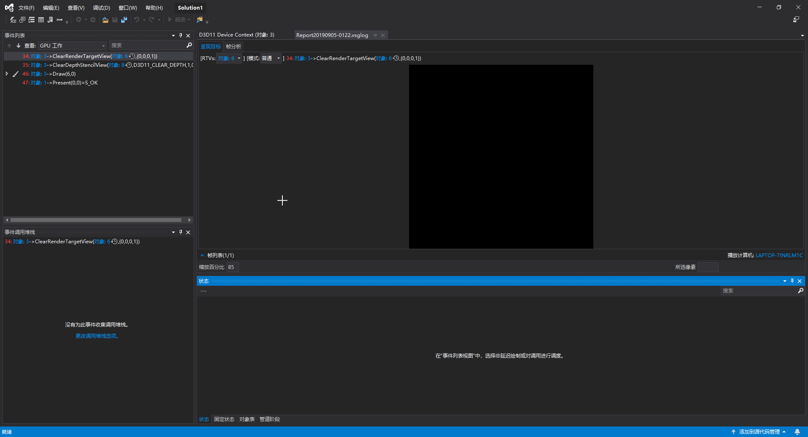
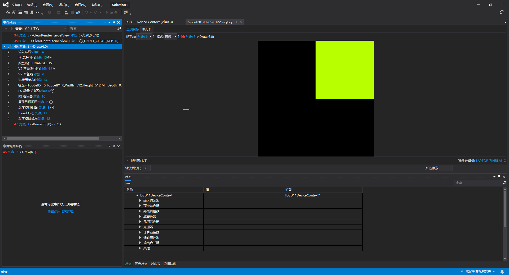
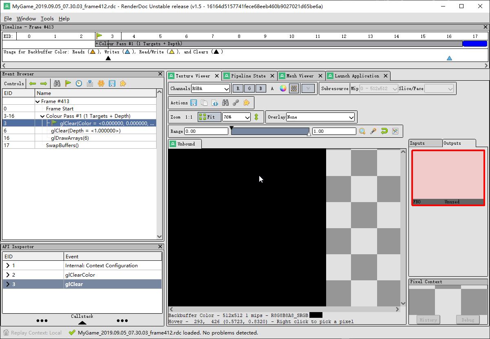
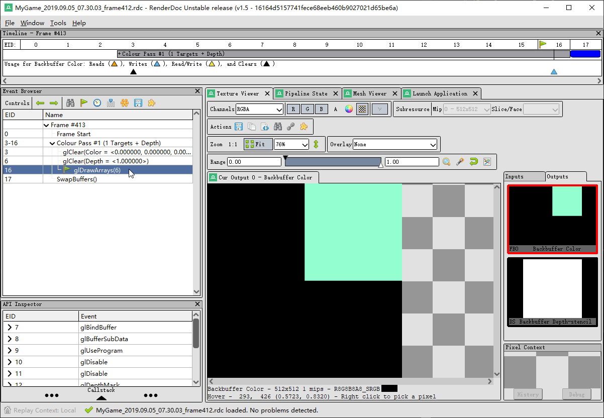
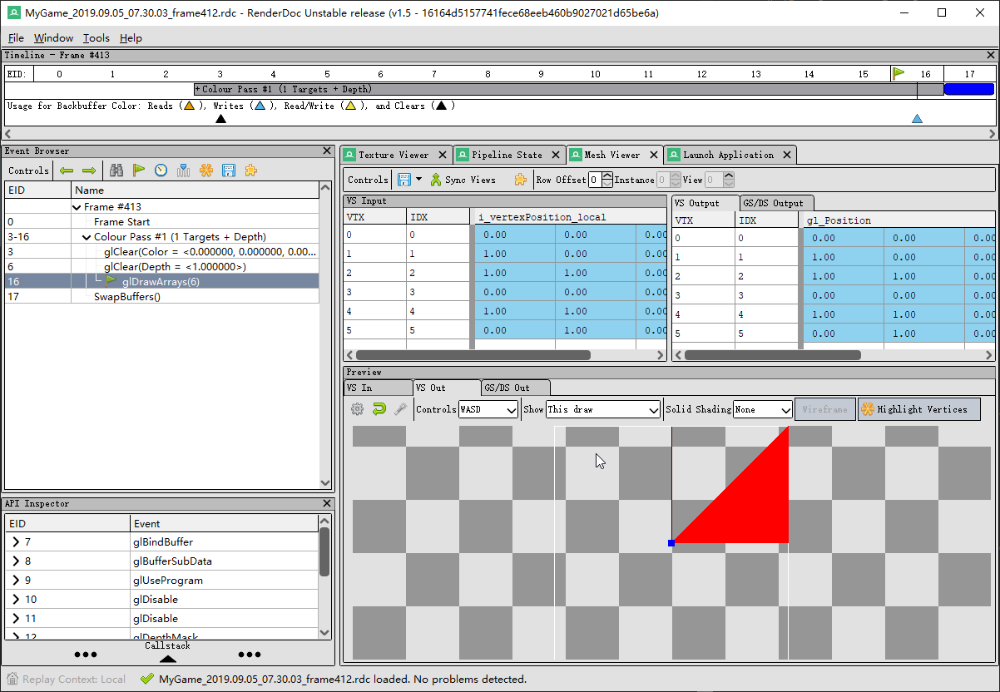
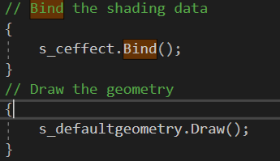

Assignment2
In this assignment, we learned how to separate specific abstraction from a large chunk of codes. There are generally two situations, The code could be totally platform-dependent, in which case we only need to separate the code into different classes for different platform. Or it could be partially platform-independent, in which case we should put the comment parts together in one class, and implement the definition of the platform-dependent parts in separate .CPP files.
To seperated the second type of code, usually you will have a .h file which uses the preprocessors to provides different platform-dependent data members and contain all the interface(public functions). then use a .CPP file to give the definition of the common interface and have a platform-dependent interface defined in separated .cpp files, which is included only under the right platform.
My implementation is a bit different. Basically, I used a base class to contain the common interface and inherited classes for the difference. Having commen data in base class and plateform-dependent data in children. Using overwrite function in children class to make sure the right set of action got invoked on certain platforms. I would discuss more later.
Application
D3d11 Graphic debugging using build-in visual studio tool


OpenGL Graphic debugging using Renderdoc



Binding and Drawing

Things remain different
Actually, there aren't many differences in comparing the remaining d3d11 code with OpenGL code other than they use a different syntax, except that d3d11 would use a "View" to represent the scene, while OpenGL would use "program", which has already been migrated to Effect codes.